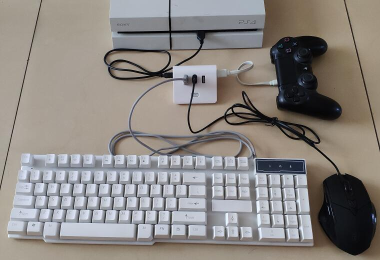
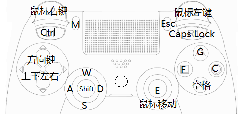

Home
»
hardware
» NS_KeyboardMouse
Page Updated 2018-07-01 11:21:56
NS_KeyboardMouse
键鼠快速上手
准备
原装PS4手柄（暂不支持国产盗版手柄）
任意USB鼠标或2.4G键鼠接收头
任意USB键盘或2.4G键鼠接收头（部分背光键盘的电流过大，PS4主机无法带动，请用双口USB线加强供电，或换普通键盘）
使用
先断开PS4手柄与主机的无线连接，再如下图连接，PS4手柄会亮起紫色指示灯，按一下PS键，即可使用。

默认已在转换器中刷入了PUBG的配置文件，简略映射关系如下：
